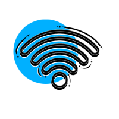
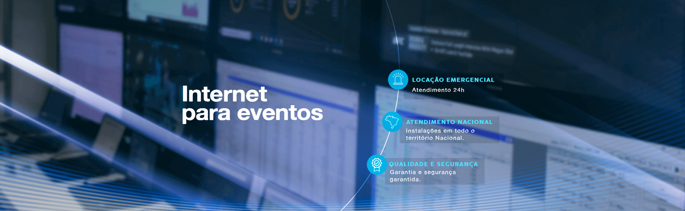
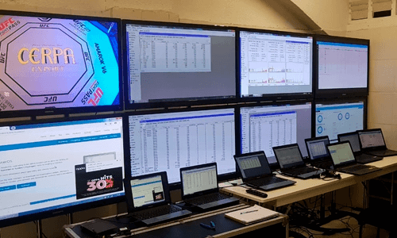
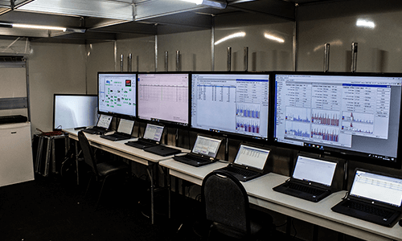
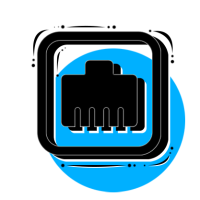
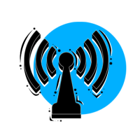
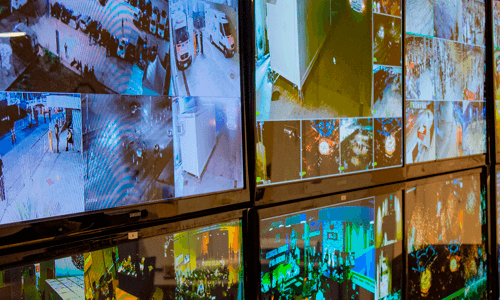

Distribuição de rede Wi-Fi
Pontos de Wi-Fi para ambientes internos ou externos, com equipamentos de qualidade e capacidade para muitos usuários conectados ao mesmo tempo.
Saiba mais
Tecnologia para eventos
Não tenha mais problemas com internet no seu evento. Temos a solução completa para você.
SOLICITE SEU ORÇAMENTOConectividade completa
Fornecemos internet (link dedicado) para todos os tipos de eventos. Fazemos a distribuição interna e externa do link de internet no local, via cabo ou Wi-Fi, com equipamentos preparados para grande número de conexões simultâneas, segurança e desempenho.
Com gerenciamento e monitoramento remoto, podemos configurar múltiplos ambientes de rede separados, com gestão de usuários e velocidades independentes, sob medida para cada cliente.
Saiba mais sobre internet para eventos →

Soluções em internet

Pontos de Wi-Fi para ambientes internos ou externos, com equipamentos de qualidade e capacidade para muitos usuários conectados ao mesmo tempo.
Saiba mais
Pontos cabeados para seu ambiente, uma conexão estável e segura para estações, equipamentos e operações críticas.
Saiba mais
Conexão dedicada para garantir velocidade, desempenho e segurança para a sua empresa ou evento.
Saiba mais
Soluções de tecnologia
Monitoramento de rede e acompanhamento da operação com suporte técnico especializado.
Conheça as soluçõesNossa estrutura
Vamos conversar?